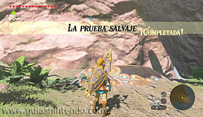

Este santuario se encuentra en la región de la torre de Farone, aunque para encontrarlo primero debes superar la prueba heroica "La prueba salvaje". El santuario se encuentra en una isla llamada isla Frontia que hay al sudeste del mapeado.
Para llegar a dicha isla puedes planear desde la punta del cabo Urron, donde se encuentra el santuario de Jiihmu, o utilizar una balsa impulsándola con una hoja kolog (desde la isla solitaria donde está el santuario de Keltsar, por ejemplo). Lo primero requerirá que tengas un buen nivel de resistencia, mientras que lo segundo será más lento y aburrido.
La prueba heroica "La prueba salvaje" se activará automáticamente en cuando llegues a la isla Frontia, lugar donde perderás temporalmente casi todo el contenido de tu alforja (todo menos tu piedra sheikah y el apartado de objetos importantes). El objetivo será encontrar tres esferas y colocarlas en sendos pedestales sin la ayuda del contenido habitual de tu alforja, aunque podrás almacenar y utilizar todo aquello que encuentres en la isla para ayudarte (no podrás guardar la partida desde que la prueba se inicie hasta que se termine). Cuando completes el santuario recuperarás tus objetos y perderás lo que hayas encontrado en la isla.
Los pedestales se encuentran en los extremos noroeste, sudoeste y sudeste de la isla, mientras que las esferas están custodiadas por enemigos.
 |
Esfera al oeste de la isla. Es la esfera más fácil de todas, ya que se encuentra en lo alto de un puesto avanzado enemigo compuesto por bokoblins normales y azules. Lo mejor es dejar esta esfera para cuando tengas un arco con el que abatir a los vigías.
Pedestal noroeste. Lo más sencillo es lanzar la esfera al mar, hacia el pedestal, y luego utilizar el módulo Témpano para crear uno bajo la esfera. De esa manera, podrás subir por el témpano, coger la esfera y lanzarla desde ahí hacia el pedestal.
Pedestal sudoeste. Está custodiado por bokoblins normales y azules y por chuchus eléctricos. Sobre el pedestal hay unas cajas metálicas que puedes apartar con la ayuda del módulo Imán.
Esfera al sudoeste de la isla. Es la esfera más difícil de todas, ya que la porta un Hinox complicado de eliminar sin contar con un buen equipo. La manera más sencilla de hacerlo es utilizando el módulo Imán para coger las cajas metálicas que hay sobre el pedestal del sudoeste y golpearle con ellas. Si se te rompen, lánzale Bombas, barriles explosivos o rocas desde lo alto de la colina donde está dicho pedestal (o busca más caja metálicas, como por ejemplo las que hay en la playa de Toronbo).
Esfera y pedestal del sudeste. La esfera está custodiada por bokoblins normales y azules y por un moblin, mientras que el pedestal se encuentra debajo de una plancha de piedra que puedes elevar con la ayuda de un globo de octorok.
Cuando logres poner las tres esferas en los tres pedestales completarás la prueba heroica, aparecerá el santuario en el punto más alto de la isla y te devolverán todos tus objetos.

Dentro solo verás un cofre y el altar. Dentro del cofre puedes coger una rupia dorada. Cuando llegues al altar podrás examinarlo para obtener un símbolo de valía.